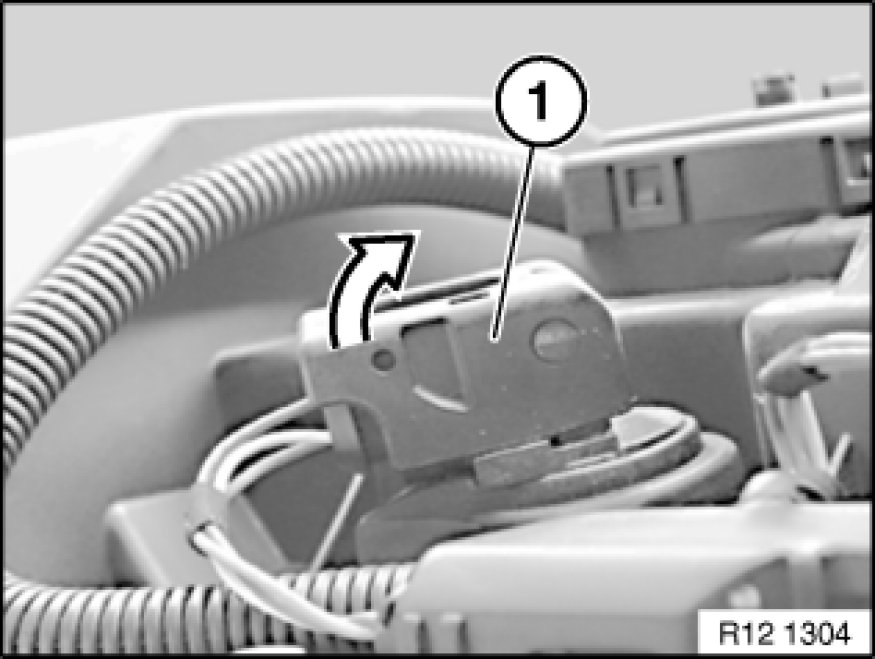
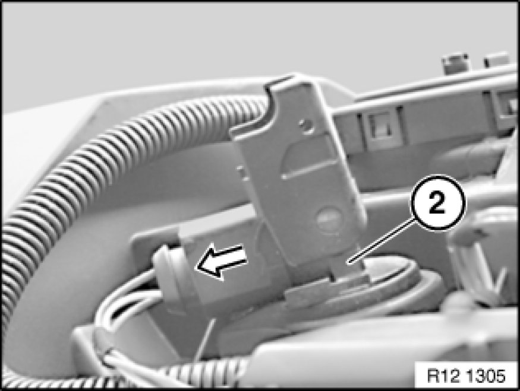
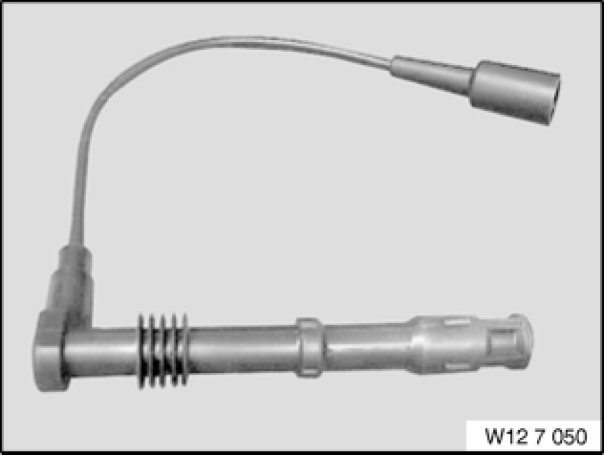
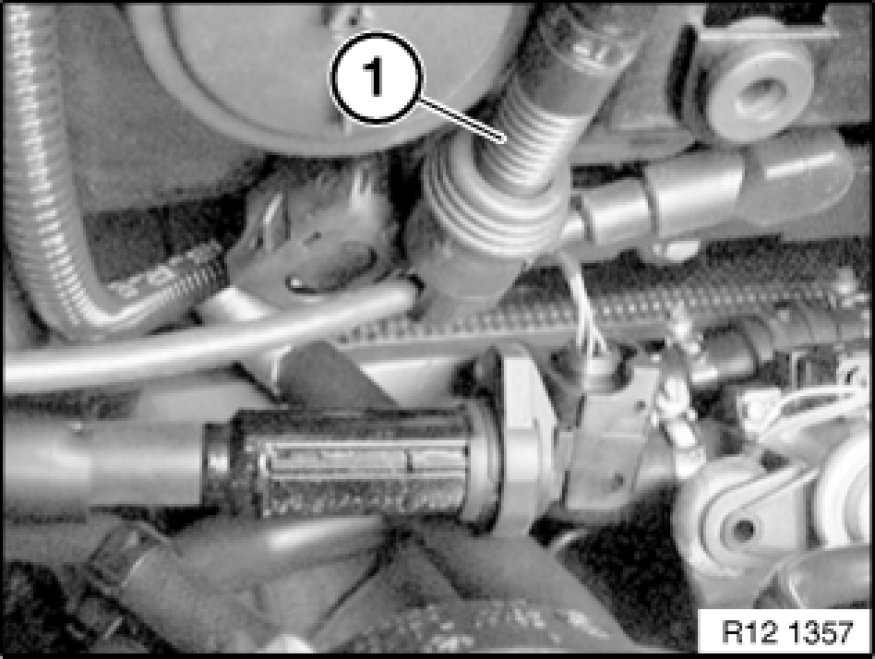
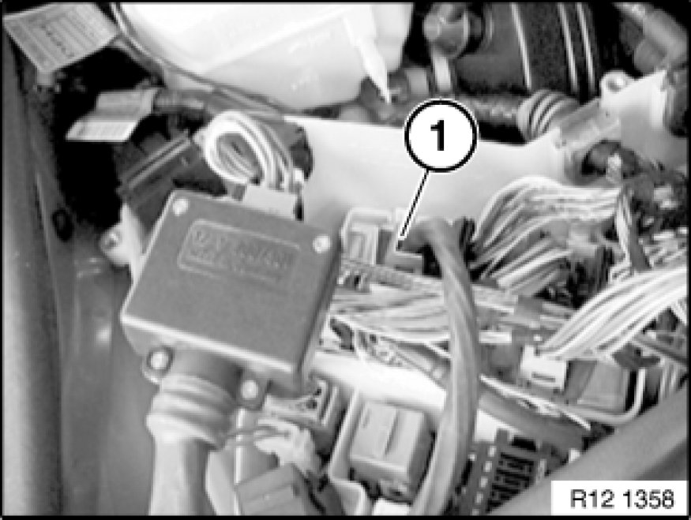
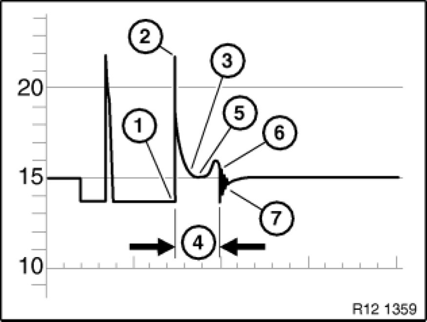
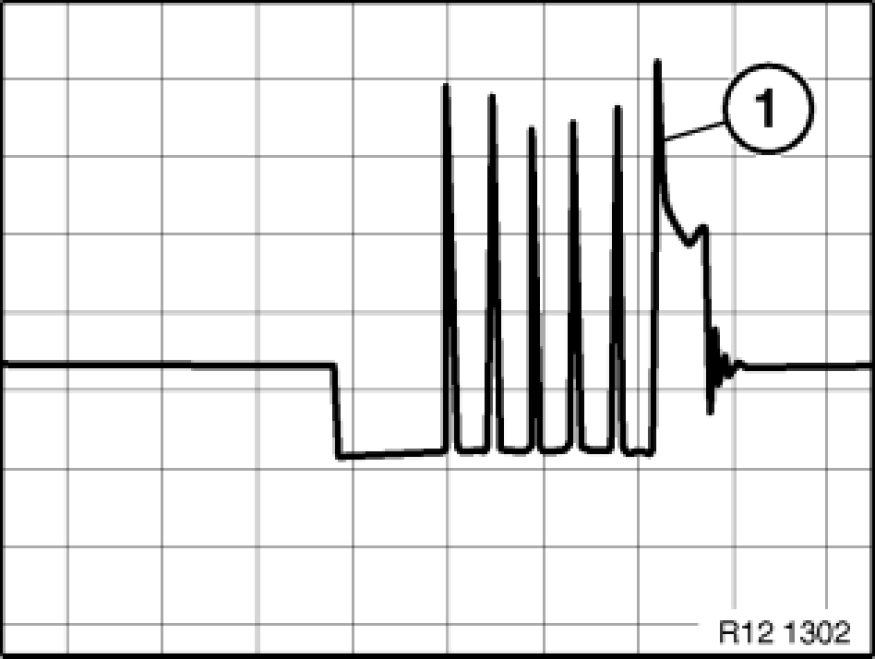

Ignition Coil: Testing and Inspection
12 13 009 - Checking rod-type ignition coils (M54/M56/N40/N42/N43/N45/N46/N52/N62/N62TU/N73)

Special tools required:
- 12 1 301
- 12 7 050 12 7 050 Adapter Lead

Necessary preliminary tasks:
- Read out fault memory in DME (Digital Engine Electronics)
- N40: Remove sound absorption hood
- N42: Remove sound absorption hood
- N43: Remove sound absorption hood
- N45: Remove sound absorption hood
- N46: Remove sound absorption hood
- N52: Remove sound absorption hood
- N62/N62TU: Remove sound absorption hood
- N62/N62TU: Remove ignition coil cover
Open control unit box
- Remove M54/56 ignition coil cover

Unlock plug fastener (1) of ignition coil.

Detach plug (1) in direction of arrow.
Pull out ignition coil (2) towards top.
Note:
Procedure applies to all rod-type ignition coils.

Install special tool 12 7 050 12 7 050 Adapter Lead.
Installation:
Special tool 12 7 050 12 7 050 Adapter Lead is attached between spark plug and rod-type ignition coil.

Secondary measurement:
Connect KV clip-on probe (1) of DIS Tester to special tool 12 7 050 12 7 050 Adapter Lead.
Procedure on DIS Tester:
- Select [Measurement].
- Select [Preset measurement].
- Select [Secondary ignition signal].
- Connect [TD cable to diagnostic head].
- Select [static ignition distribution].
- Select [Number of cylinders].
For subsequent procedure, follow DIS instructions.
Note:
Illustration shows: KV clip-on probe (1) US version.

Primary measurement:
Connect 26-pin pin box with special tool 12 1 301 to connector (1) DME module 5.
Procedure on DIS Tester:
- Select [Measurement].
- Select [Preset measurement].
- Select [Ignition signal term.1].
For subsequent procedure, follow DIS instructions.
Note:
Pin assignment acc. to connection scheme.
Illustration N42.
Important!
Ignition signal is a multiple spark ignition.

Illustration of multiple spark ignition
1 - Start of ignition peak.
2 - Level of ignition voltage.
3 - Level of sparking voltage.
4 - Spark duration.
5 - Sparking voltage curve.
6 - Start of decay process.
7 - Decay process.

M54 / M56 / N40 / N42 / N45 / N46 / N62 / N73:
The following ignition oscillogram applies to engines with multiple spark ignition from a production date of April 2001:
Depending on engine temperature (approx. -20° to 100°) and engine speed (< 2000 rpm.), some ignition voltage peaks (approx. 1-5 ignition peaks) can occur before the typical ignition voltage characteristic.
The additional ignition peaks play no role in diagnosis.
The last ignition peak (1) on the oscillogram is decisive.

Note:
The display of the ignition voltage peak is approx. 20-25% lower than the real value.
It is not the height of the ignition voltage peaks but rather the uniformity of all the cylinders that is important.
Differences of 3000 to 4000 volts are permitted.